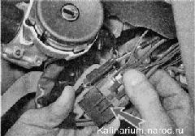
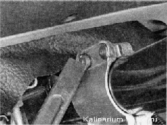

Замок зажиганияВ цепи питания большей части электрооборудования автомобиля, кроме аварийной, звуковой и световой сигнализации, освещения салопа, габаритного света, сигнала торможения, охранной сигнализации и электропривода замков дверей, напряжение поступает через выключатель зажигания. Для повышения противоугонных свойств автомобиля выключатель совмещен с замком, поэтому это устройство чаще называют замком зажигания. Корпус замка крепится к рулевой колонке четырьмя специальными болтами с отрывными головками. При определенном моменте затяжки болтов головки отрываются, и после этого отвернуть болты гаечными ключами становится невозможно. Замок зажигания дополнительно оборудован механизмом блокировки рулевого вала. После извлечения ключа из замка освобождается подпружиненная защелка. При попытке поворота рулевого колеса защелка фиксирует рулевой вал от проворачивания. ПРОВЕРКА Для выполнения работы потребуется мультиметр. Последовательность выполнения 1. Подготавливаем автомобиль к выполнению работы и отсоединяем клемму провода от отрицательного вывода аккумуляторной батареи. 2. Снимаем декоративные накладки рулевой колонки. 3. Разъединяем пару колодок шута проводов выключателя (замка) зажигания. 4. Ориентируясь по цвету проводов мультиметром (в режиме омметра) проверяем исправность замыкания выводов в колодке. Проверку выполните, когда ключ находится в положении О - «выключено». Затем проверьте замыкание контактов в положении I - «включено» и II — «стартер». Порядок замыкания контактов и цвета проводов на выводах показаны на схеме электрооборудования автомобиля Замок зажигания с неисправной контактной группой заменяем. СНЯТИЕ И УСТАНОВКА Для выполнения работы потребуются четыре специальных болта с отрывными головками. При отсутствии специальных болтов можно закрепить новый замок при помощи болтов с резьбой Мб длиной 20 мм, правда при этом противоугонная защищенность автомобиля значительно снизится. Снятие 1. Разъединяем колодки жгутов проводов выключателя (замка) зажигания . 2. Уперев лезвие зубила в кромку головки одного из болтов, легкими ударами молотка по зубилу ослабляем затяжку болта. Аналогично ослабляем затяжку трех оставшихся болтов крепления выключателя. Зубило не должно разрубить головку болта, оно должно повернуть болт против часовой стрелки, чтобы ослабить его затяжку. 3. Плоскогубцами с узкими губками выворачиваем болты. При отворачивании последнего болта придерживаем замок зажигания. Снимаем скобу крепления замка и сам замок зажигания с рулевой колонки. Установка 1. Перед установкой замка зажигания вставляем в него ключ и поворачиваем его в положение I («включено»), чтобы защелка механизма блокировки рулевого вала была задвинута в корпус замка. 2. Устанавливаем замок зажигания со скобой крепления на рулевую колонку и от руки заворачиваем новые болты крепления. 3. Вынув ключ из замка зажигания, проверяем работу механизма блокировки рулевого вала. Если рулевой вал не фиксируется после полного оборота рулевого колеса, необходимо отрегулировать положение замка зажигания на рулевой колонке так, чтобы защелка замка могла войти в паз на рулевом валу. 4. Убедившись, что механизм блокировки работает, накидным ключом на 10 мм равномерно (крест-накрест, по пол-оборота) затягиваем болты до отрыва их головок. 5. Соединяем колодки проводов выключателя (замка) зажигания и устанавливаем накладки рулевой колонки. |